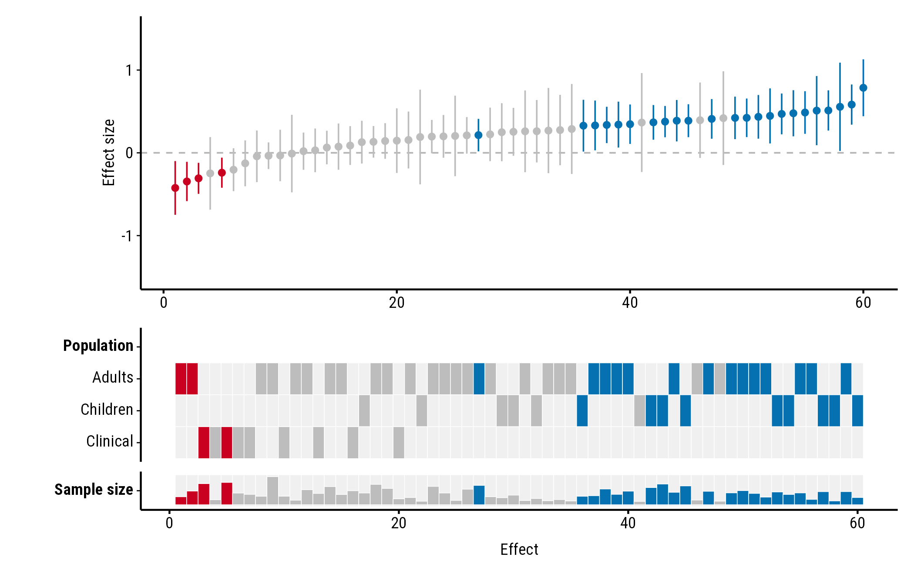
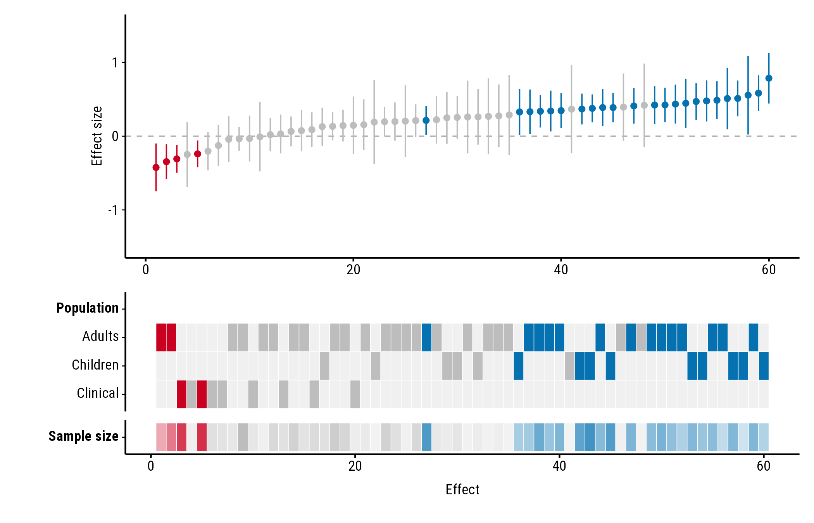
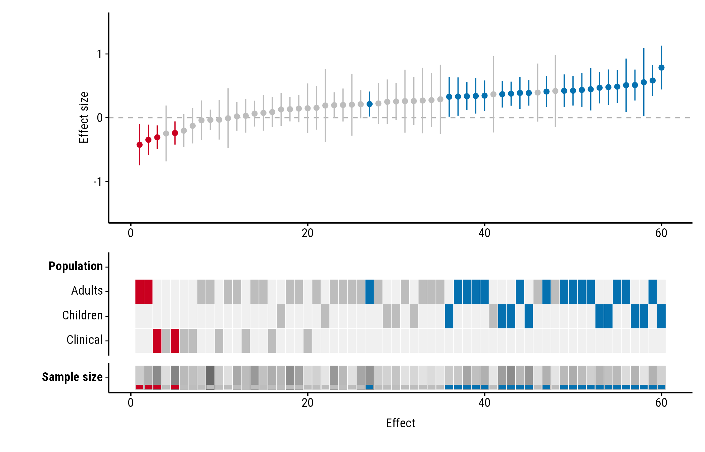
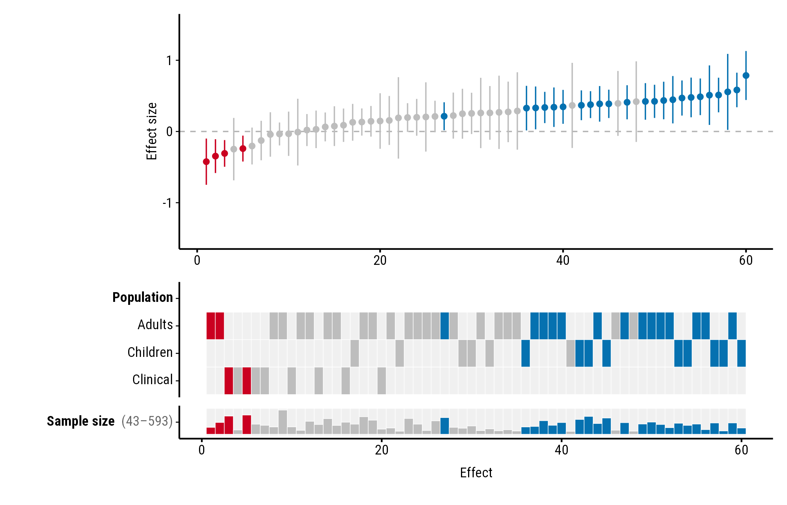
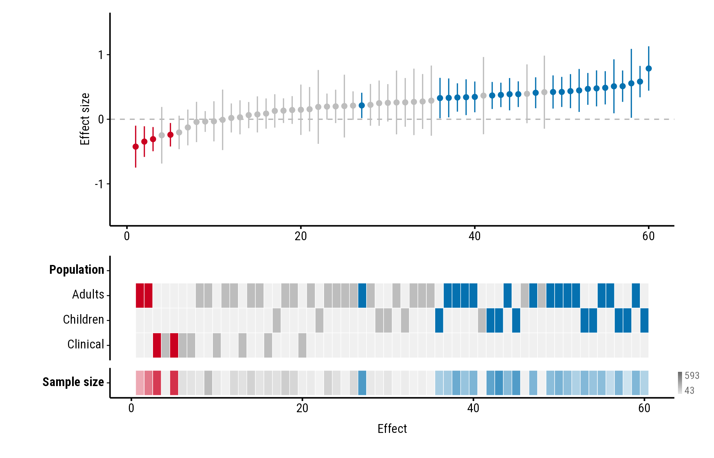
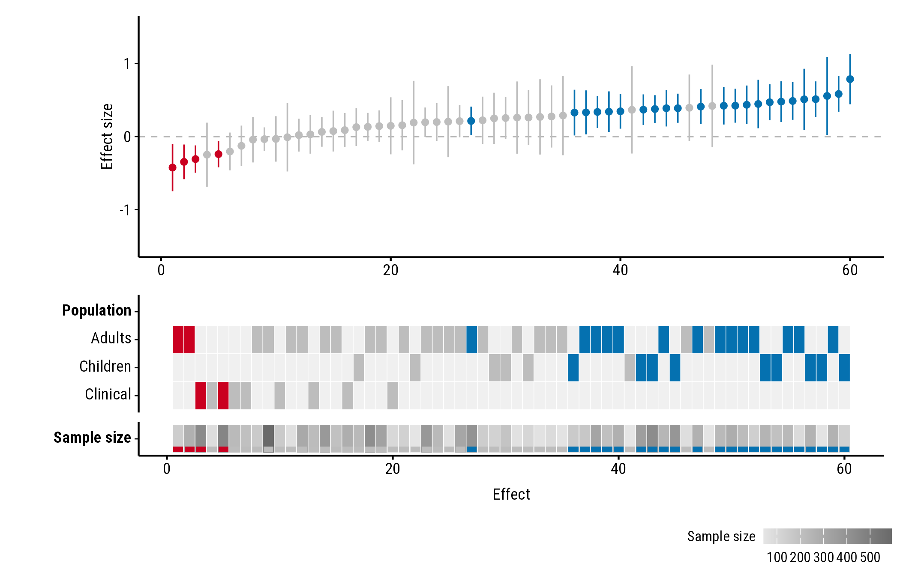
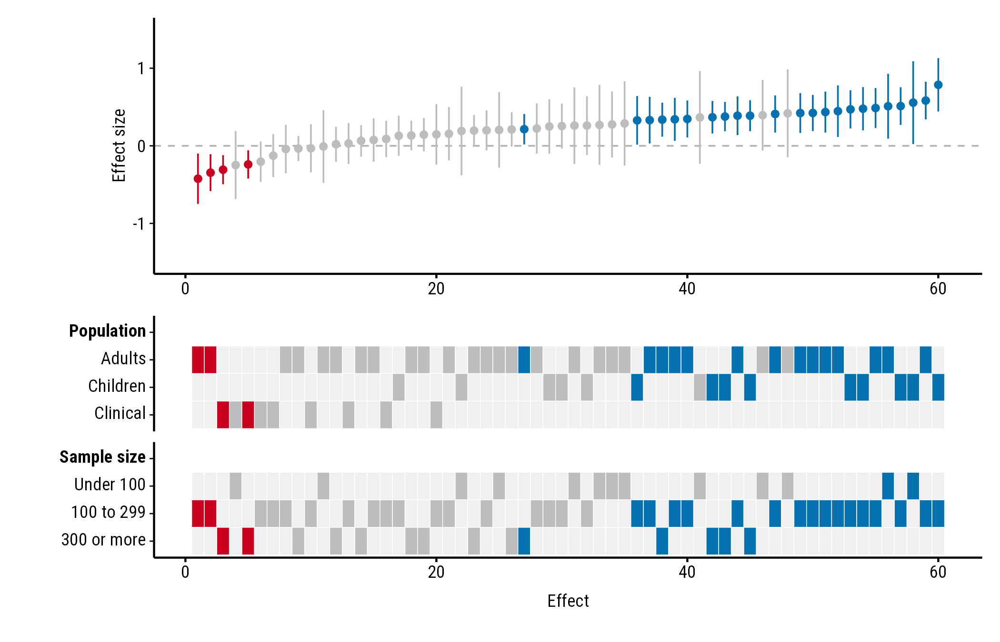
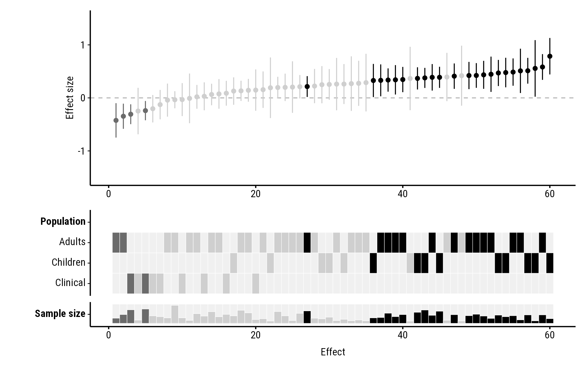

Study properties don’t have to be categories. A numeric column, such
as mean age or sample size, is shown as a single row of the heatmap. All
the examples use the forestmap_example data that comes with
the package; its n column holds each study’s sample
size.
Each study’s tile shows its value, scaled from the lowest value in
the data to the highest. A study with a missing value (NA)
gets an empty tile.
Styles
continuous_style sets how the value is drawn. Every
style keeps the study’s colour (blue, red or grey), so you can still see
which studies found an effect.
Bar
"bar", the default, draws a bar in the study’s colour,
taller for larger values. Bars start a little above zero height, so even
the smallest value shows its colour:
plot_forestmap(
forestmap_example, "smd", vi = "vi",
moderators = c("Population" = "population", "Sample size" = "n")
)
Tint
"tint" fades each tile from a pale version of the
study’s colour (the smallest values) to the full colour (the
largest):
plot_forestmap(
forestmap_example, "smd", vi = "vi",
moderators = c("Population" = "population", "Sample size" = "n"),
continuous_style = "tint"
)
Stripe
"stripe" shows the value as a shade of grey, the same
for every study, with a band in the study’s colour along the bottom of
the tile:
plot_forestmap(
forestmap_example, "smd", vi = "vi",
moderators = c("Population" = "population", "Sample size" = "n"),
continuous_style = "stripe"
)
Showing the range
By default the plot doesn’t say which values the shades or bars stand
for. continuous_range adds the lowest and highest value, in
one of three places. Each works with every style.
In the label
"label" adds the range after the property’s name:
plot_forestmap(
forestmap_example, "smd", vi = "vi",
moderators = c("Population" = "population", "Sample size" = "n"),
continuous_range = "label"
)
At the end of the row
"end" puts a small key at the right end of the row, with
the highest value at the top and the lowest at the bottom:
plot_forestmap(
forestmap_example, "smd", vi = "vi",
moderators = c("Population" = "population", "Sample size" = "n"),
continuous_style = "tint",
continuous_range = "end"
)
In a legend
"legend" adds a legend below the plot, one for each
numeric property:
plot_forestmap(
forestmap_example, "smd", vi = "vi",
moderators = c("Population" = "population", "Sample size" = "n"),
continuous_style = "stripe",
continuous_range = "legend"
)
Numbers as categories
To show a numeric column as categories instead, convert it to a
factor first. factor() gives one row per value, which suits
numbers that stand for groups, such as a site number. cut()
groups a range of values:
dat <- forestmap_example
dat$size <- cut(
dat$n,
breaks = c(0, 100, 300, Inf),
labels = c("Under 100", "100 to 299", "300 or more"),
right = FALSE
)
plot_forestmap(
dat, "smd", vi = "vi",
moderators = c("Population" = "population", "Sample size" = "size")
)
Colours
Bar and tint use the plot’s palette, so they change with it. Stripe’s
grey is matched to how dark the palette is. With the
"greyscale" palette every colour is a grey, which makes
tint and stripe hard to read, so keep the default bars:
plot_forestmap(
forestmap_example, "smd", vi = "vi",
moderators = c("Population" = "population", "Sample size" = "n"),
palette = "greyscale"
)